나의 학습·진로
사용설명서 만들기
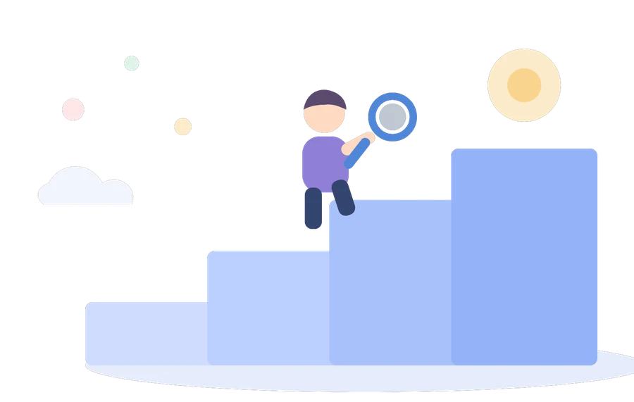
<주요이력>
現도움교육컨설팅 대표
現KSA 한국표준협회 전문위원
現경남인재개발원 외래교수
現창원산업진흥원 인력양성팀 재직자교육 전담강사
前ADT캡스텍, 서경방송 직원교육 전담강사
前CJ 프레시웨이 제품홍보 및 컴플레인 관리
前㈜오뚜기 제품 세일즈 및 고객관리
<최종 학력>
경남대학교 일반대학원 교육학 박사수료
<출강 업체>
기업 : 우리FIS금융그룹, 현대모비스, 현대 WIA, SK하이닉스, 두산중공업, 에스오일, 한진중공업, 동국제강, 금호타이어, 아모레퍼시픽, ㈜한화시스템, ㈜크린랩, 농협은행, ㈜농심, ㈜한국알콘, ㈜한국쉘석유 外 다수 기업
기관 : 한국사회보장정보원, 두산중공업, 한국전력공사, 한국농어촌공사, 노사 발전재단, 한국콘텐츠진흥원, 경남소방본부, 경남경제진흥원, 창원산업진흥원, 부산디자인진흥원, 통영관광개발공사, 경북문화관광공사, 경북독립운동기념관, 창원산업진흥원, 울산세무서, 창원교육지원청, 창원해양경찰서 外 다수 기관
Q1. 여러분의 지금 현재 기분상태를 간단히 체크해 보지요.
지금 이 버스는 1, 2, 3번중 어느 방향으로 움직이고 있을까요?
1. Down : 기분이 Down 상태임, 교육에 수동적
2. Normal : 그냥 강사의 얘기가 재미있으면 듣고 아님 말고
3. Up : 교육에 능동적(또는 나는 지금 교육에 열심히 참가할 의지가 있다)
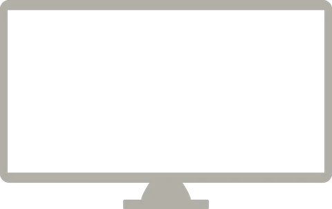
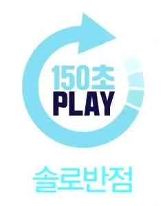
오후 진행 순서
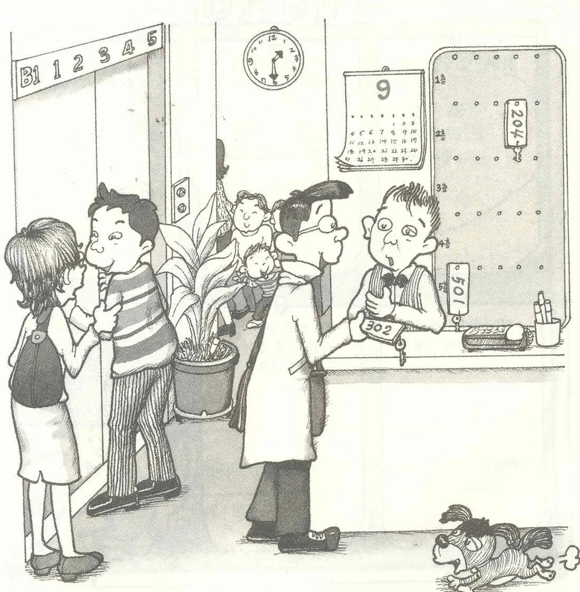
나의 관찰력은?
- 01지금은 몇 월입니까?
- 02이 건물은 몇 층 높이의 건물인가요?
- 03이 호텔에 남은 방은 몇 개인가요?
- 04엘리베이터 앞에는 몇 명이 서 있나요?
- 05새로 방을 배정 받은 사람은 몇 층 방을 받았나요?
- 06현재 시간은 몇 시 몇 분 입니까?
보인다.
같은 그림을 봐도 사람마다 기억하는 것이 다릅니다. 상대를 이해하는 첫걸음은 ‘내가 보는 방식’을 아는 것
‘틀리다’와 ‘다르다’
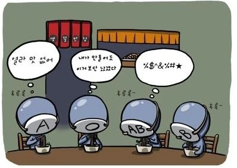
‘틀리다’와 ‘다르다’
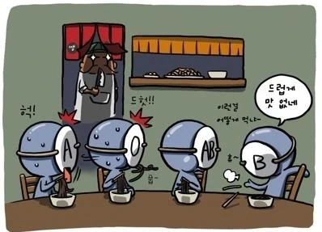
틀린 것이 아니라
다른 것이다.
직업, 누군가의 문제를 해결하는 일
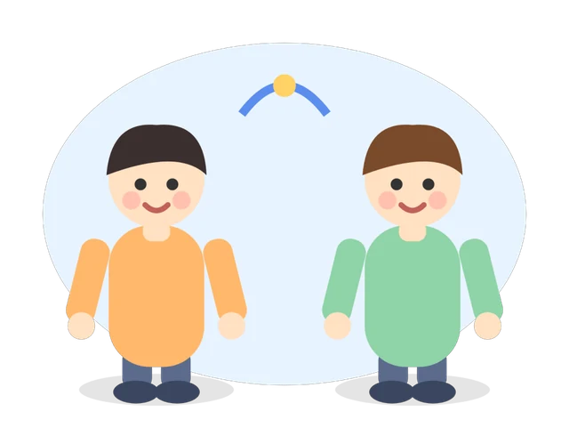
오늘 아침부터 내가 쓴 물건,
그 뒤에 숨은 직업은?
직업 변천 O/X 퀴즈 1 / 5
직업이 아니었다
직업 변천 O/X 퀴즈 2 / 5
창구 직원은 한동안 오히려 늘었다
직업 변천 O/X 퀴즈 3 / 5
늘었다
직업 변천 O/X 퀴즈 4 / 5
모두 사라진다
직업 변천 O/X 퀴즈 5 / 5
전화를 쓰는 사람이 줄었기 때문이다
직업은 사라지고, 변하고, 새로 생긴다
전화 교환원
택시 기사 → 앱 호출
드론 조종사
직업 탐정단 ① 사건 제시
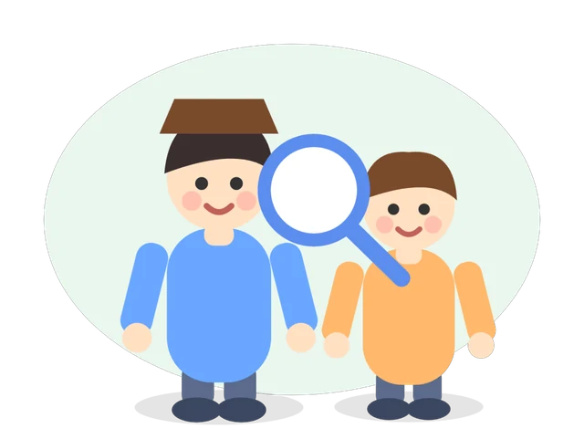
매일 쌓인다
자주 놓친다
너무 많이 나온다
못 줄이는 친구
직업 탐정단 ② 추리와 발표
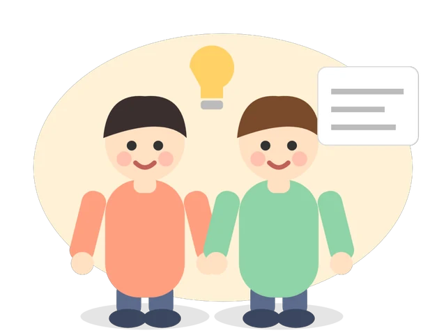
직업 탐정단 결과 예시
매일 쌓인다
도시계획가
자주 놓친다
앱 개발자
너무 많이 나온다
조리사
못 줄이는 친구
앱 개발자
탐정단 결과에서 읽은 것
AI 시대, 일은 이렇게 갈라진다
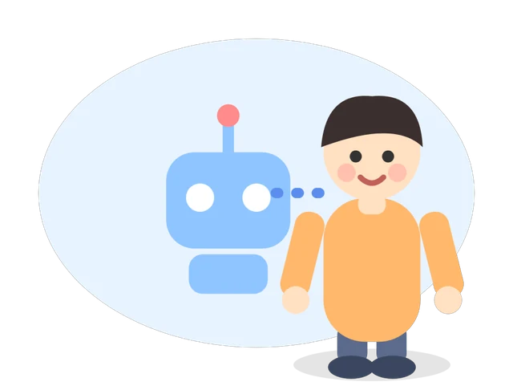
앞으로 필요한 힘 4가지
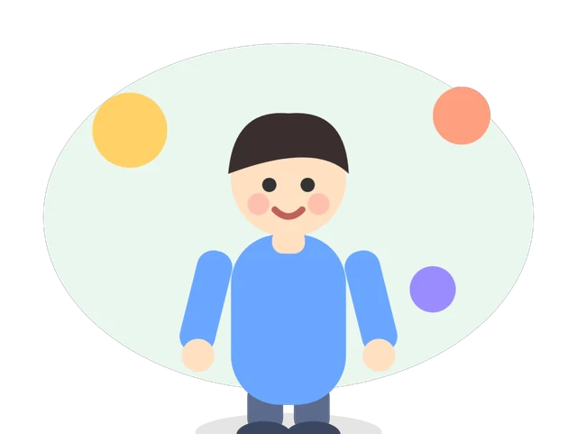
먼저 발견
맞는지 따져보기
쉽게 설명
합쳐 새로 만들기
AI 시대 할 일 나누기
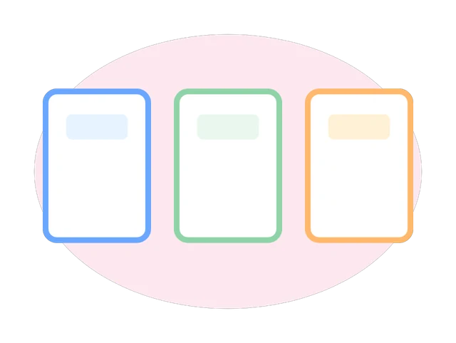
더 잘할 일
일은 바뀌어도 나는 남는다
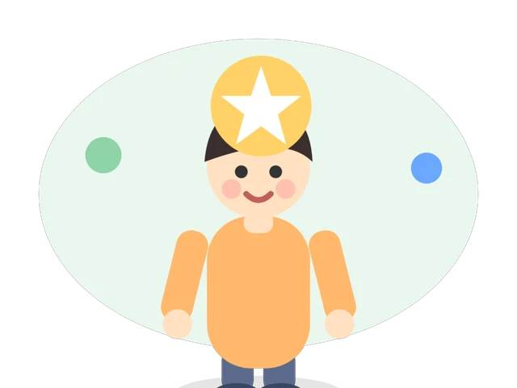
나의 학습·진로
사용설명서 만들기
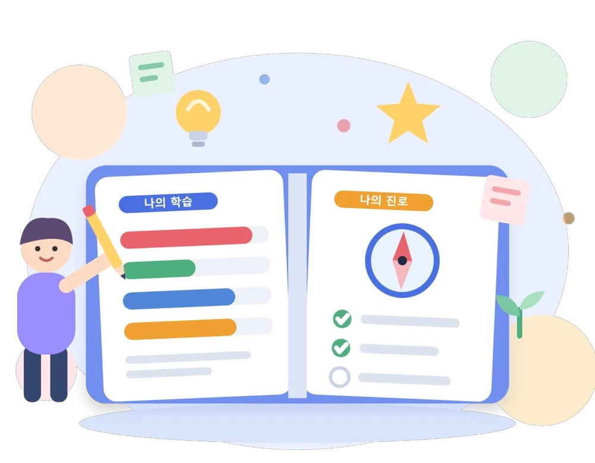
결과지 구성 ① 학습유형검사
가상 예시 결과지 — 번호로 위치 확인
공부할 때 편한 방식
행동 · 규범 · 탐구 · 이상 4막대
공부하면서 겪는 어려움의 단서
개인 확인 전용
결과지 구성 ② 진로탐색검사
가상 예시 결과지 — 번호로 위치 확인
진로 준비 상태 6요인
높고 낮음 = 우열 아님
끌리는 활동 10영역
편한 일 방식
1·2차 기준 · 추천 직업·학과
결과 해석 O/X
결과 해석 원칙
우열 없음
점수 높음 ≠ 우수
점수 낮음 ≠ 부족
편한 방식의 차이
지금의 경향
오늘 응답 기준
시간·환경에 따라 변화
능력·미래 판단 자료 아님
결과 + 내 경험
결과와 다르면 이유 탐색
경험과 함께 읽기
새로운 단서로 활용
결과지 수령
결과지 읽는 법
가상 예시 막대 — 내 결과지에서 직접 찾기
학습성격 4유형
결과지의 가장 높은 막대 = 내 유형 → 같은 유형끼리 모여 앉기
내 학습성격 확인
결과지에서 확인
학습스타일 팀 편성
구역 표지 위치
구역 표지 위치
구역 표지 위치
구역 표지 위치
학습스타일 팀 활동
우리 팀 공부 이야기 — 질문 4개
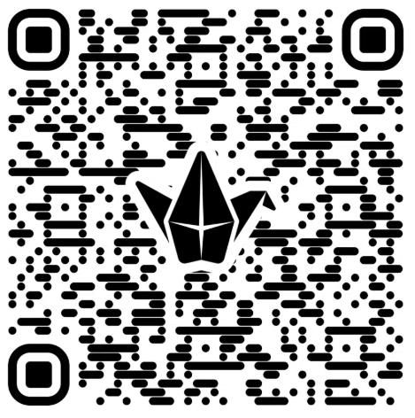
공부할 때 우리가 중요하게 여기는 것은?
예시 (행동형 팀) · 직접 해 볼 때 신난다
언제 · 어디서 · 어떻게 집중이 잘 되나?
예시 (행동형 팀) · 소리·움직임이 있는 곳
어떤 수업·과제에서 쉽게 지치나?
예시 (행동형 팀) · 오래 앉아 필기 · 반복 문제
우리에게 맞는 공부법 1가지는?
예시 (행동형 팀) · 짧게 끊고 게임처럼 하기
팀 이야기 공유
질문 ④
맞는 공부법
1가지
질문 ④
맞는 공부법
1가지
질문 ④
맞는 공부법
1가지
질문 ④
맞는 공부법
1가지
행동형 — 직접 해 보며 배우는 방식
- 기본욕구
- 자유 · 자발성
- 강점
- 융통성 · 순발력
- 개발 포인트
- 계획 세워 끝까지
- 잘 맞는 진로 영역
- 행정/경영 · 서비스 · 신체활동 · 예술
규범형 — 계획대로 차근차근 배우는 방식
- 기본욕구
- 책임 · 성실
- 강점
- 계획적 · 꼼꼼함
- 개발 포인트
- 새로운 시도에 열린 마음
- 잘 맞는 진로 영역
- 사무 · 자연 · 산업기계
탐구형 — 원리를 알아야 배우는 방식
- 기본욕구
- 지식 · 의문
- 강점
- 논리 · 아이디어
- 개발 포인트
- 타인의 감정에 관심
- 잘 맞는 진로 영역
- 과학 · 산업기계
이상형 — 사람과 의미로 배우는 방식
- 기본욕구
- 인간성 · 조화
- 강점
- 헌신 · 공감
- 개발 포인트
- 객관적 정보 · 현실 판단
- 잘 맞는 진로 영역
- 휴먼 · 보호 · 자연
학습성격 4유형
결과지의 가장 높은 막대 = 내 유형 → 같은 유형끼리 모여 앉기
강점융통성 · 순발력
개발 포인트계획 세워 끝까지
학습 방식직접 해 보며 배움
강점계획적 · 꼼꼼함
개발 포인트새로운 시도 · 유연함
학습 방식순서대로 차곡차곡
강점논리 · 아이디어
개발 포인트타인의 감정 · 현실
학습 방식원리를 알아야 집중
강점헌신 · 공감
개발 포인트객관적 정보 · 현실 판단
학습 방식사람·의미와 연결될 때
학습행동 개인 확인
읽는 법
이번 주 바꿀 행동 1개 선택
진로성숙도 6요인
내 진로 준비 상태 · 높고 낮음이 아니라 지금의 위치
진로 방향을 어느 정도
정했나?
진로로 무엇을 추구하나?
(의미·성장 vs 현실 조건)
내가 고른 방향에서 해낼 수
있다고 믿나?
필요한 정보를 찾고
준비하고 있나?
조언은 듣되 스스로
판단하나?
내 진로 생각과 가족의
생각은 얼마나 맞나?
요인 상세 ① 결정성 · 목적성 · 확신성
낮게 나온 요인 = 부족이 아니라 앞으로 더 해볼 행동
요인 상세 ② 준비성 · 독립성 · 일치성
낮게 나온 요인 = 부족이 아니라 앞으로 더 해볼 행동
요인 조합으로 읽기
한 요인만 보지 말고 짝으로 읽기
결정성 낮음 + 확신성 높음
재능과 흥미가 다양해 아직 하나를 못 고른 상태
→ 흥미 상위 영역에서 후보 좁히기결정성 높음 + 확신성 낮음
방향은 있는데 자신감이 부족한 상태
→ 작은 도전으로 경험 쌓기확신성 높음 + 준비성 낮음
직업을 아직 잘 몰라서일 수 있음
→ 현장 체험 · 직업인 이야기 듣기준비성 낮음 + 일치성 높음
가족 의견을 그대로 따르는 중일 수 있음
→ 내 생각 먼저 정리 (독립성도 함께 보기)내 진로 준비 상태
높은 요인은 강점으로 · 낮은 요인은 이번 달 행동으로
요인별 이번 달 행동
진로흥미 10영역
활동으로 읽기 → 내 TOP3 영역에 ★ (카드를 눌러 표시)
도구·기계를
만들고 고치기
관찰하고 원인
탐구하기
이미지·글·음악
으로 표현하기
생물·환경
돌보고 연구하기
마음을 이해하고
성장 돕기
편하고 즐겁게
응대·제공하기
자료를 정확히
정리·기록하기
사람·자원을
조직해 이끌기
안전을 지키고
질서 유지하기
몸을 움직이고
기술 활용하기
영역 상세 ① 산업기계~휴먼 (5영역)
활동과 성격 단서가 나와 닮았는지 확인 → 내 TOP3 영역에 ★
고치기꼼꼼·신중, 손과 도구로
일하기를 좋아함기계·전기전자 기술자,
자동차 정비원
탐구하고 개발하기호기심 많고 논리적으로
분석하기를 좋아함연구원, 생명과학자, 데이터
분석가
표현하기감수성·상상력이 풍부하고
개성이 뚜렷함디자이너, 웹툰 작가,
영상 제작자
돌보고 연구하기차분하고 순수, 평화로운
환경을 좋아함농업·원예 전문가,
환경 전문가, 수의사
협력·조화를 좋아함상담사, 교사, 사회복지사
영역 상세 ② 서비스~신체활동 (5영역)
활동과 성격 단서가 나와 닮았는지 확인 → 내 TOP3 영역에 ★
를 제공하기사람들과 어울리기 좋아하고
활발·즉각적요리사, 승무원, 호텔·관광
서비스
관리하기신중·꼼꼼, 정리정돈,
단계적으로 일함회계·행정 사무원, 사서
발휘하기활기차고 사교적, 자신감 있게
이끎경영 기획자, 마케터,
공공기관 행정가
안전 지키기활동적이고 정의감, 도전을
추구함소방관, 경찰관,
보안 전문가
보여 주기활발·명랑, 현재를 즐기고
무대를 좋아함운동선수·코치, 트레이너,
체육교사
진로흥미 vs 진로성격
좋아하는 것과 편한 방식을 함께 보면 더 정확하다
내가 하고 싶은 활동·주제
어떤 일에 마음이 끌리나?
내가 편하게 일하는 환경·방식
어떤 모습으로 일할 때 편한가?
※ 선과 숫자는 설명을 위한 가상 예시
흥미와 성격, 이렇게 읽기
결과는 후보를 고르는 단서 · 최종 판단은 결과지 문장 + 내 경험
합이 높은 영역이 적성 후보
차이가 적은 영역이 후보
이유 찾기 (정보·경험·자신감)
잘 맞는 후보 →
1순위로 알아보기
좋아하지만 일하는
방식이 다를 수 있음
→ 체험으로 확인
방식은 맞는데
낯선 분야 →
경험 넓히기
지금은 우선순위 뒤
→ 다른 영역 먼저
내 학습성격과 어울리는 진로 영역
학습성격 → 진로 영역은 탐색의 출발점 · 복합유형은 해당 영역 모두 보기
내 진로분야 · 예측과 결과 대조
의외인 곳이 새로운 나를 알려 준다
① 내 진로분야 기록
결과에 없는 관심 직업 → 공통점 찾기
② 오전 예측 vs 결과
B 정리 — 내 진로성향 한 줄
짝에게 공유 : 맞아요 1줄 · 의외예요 1줄 (학습행동 내용 제외)
나는 활동에 끌리고,
이(가) 강점이며, 을(를) 해 보려 한다
탐험 지도 · 코칭 로테이션
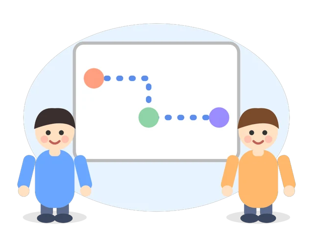
미션 A · 미래 직업 탐사대
미션 A · AI에게 묻는 질문 카드
“나는 [] 영역에
끌리는 학생이야.
10~15년 뒤 이 영역에서
AI가 바꿀 일과 새로 생길
직업 3개를 알려 줘”
미션 A ① 직업은 문제를 푸는 일
미션 A ② AI에게 잘 묻는 법
좋은 질문 3요소
나 관심 영역 · 학년
때 10~15년 뒤
답 바꿀 일 · 새 직업 3개
이어서 물어보기
이 직업은 어떤 문제를 해결해?
필요한 역량은 뭐야?
지금 내가 해 볼 수 있는 일은?
미션 A ③ 팩트체크 3질문
미션 A ④ 미래 직업 명함 만들기
AI 반려동물 건강 코디네이터
※ 설명을 위한 가상의 예시코칭존 진행판 · 질문 카드
진로 갤러리 워크
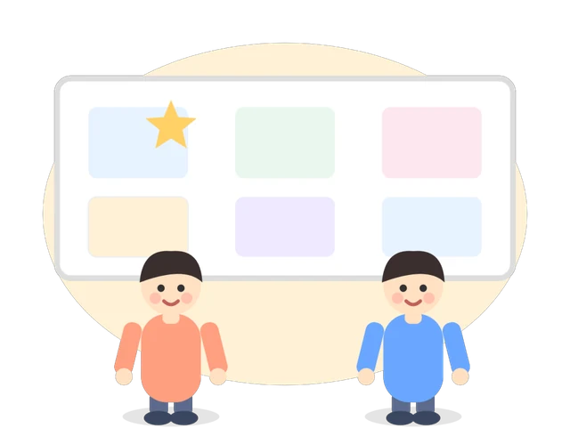
1순위 정리 · 첫 실천
미래의 나에게 한 문장
“나는 [] 때문에
[] 을(를) 해 볼 거야”
나의 학습 · 진로 사용설명서
오늘의 정리
결과 보고서 받기
여러분들의
성장과 발전을 응원합니다 ^^
미션 B · 나를 맞혀봐
미션 B ① 게임 규칙
서비스 · 사무 · 행정/경영 · 보호 · 신체활동
미션 B ② 단서 카드 쓰는 법
작성 예시 (가상)
단서 ① 친구 고민을 끝까지 들어 준다
단서 ② 모둠에서 분위기를 맞추는 역할
의외 기계 조립도 은근히 재밌다
미션 C · 작은 경험 뽑기
미션 C ① 뽑기 규칙
미션 C ② 7일 도전 카드 쓰기
빈 카드
작성 예시 (가상)
무엇을 관심 직업 인터뷰 질문 3개 정리
언제까지 다음 주 금요일
누구와 담임 선생님
남길 증거 질문과 답 메모 사진